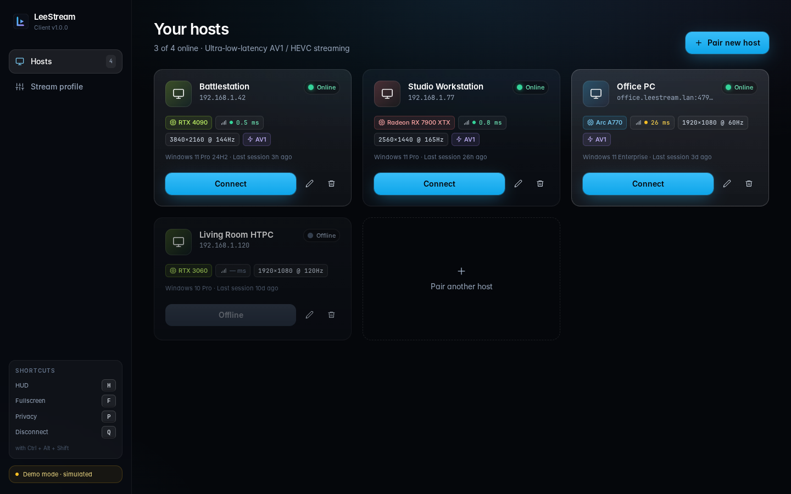
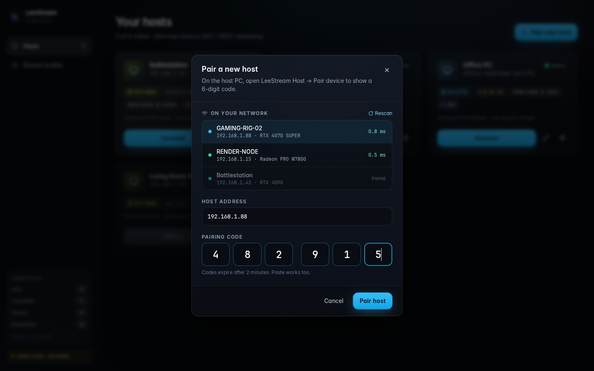
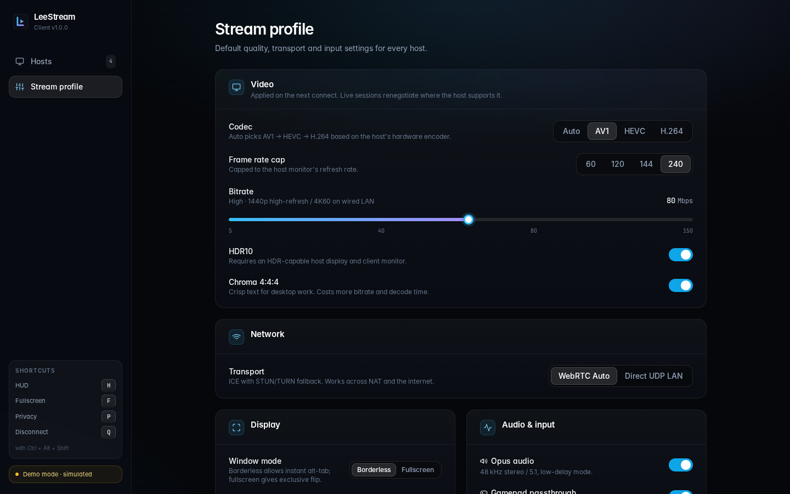
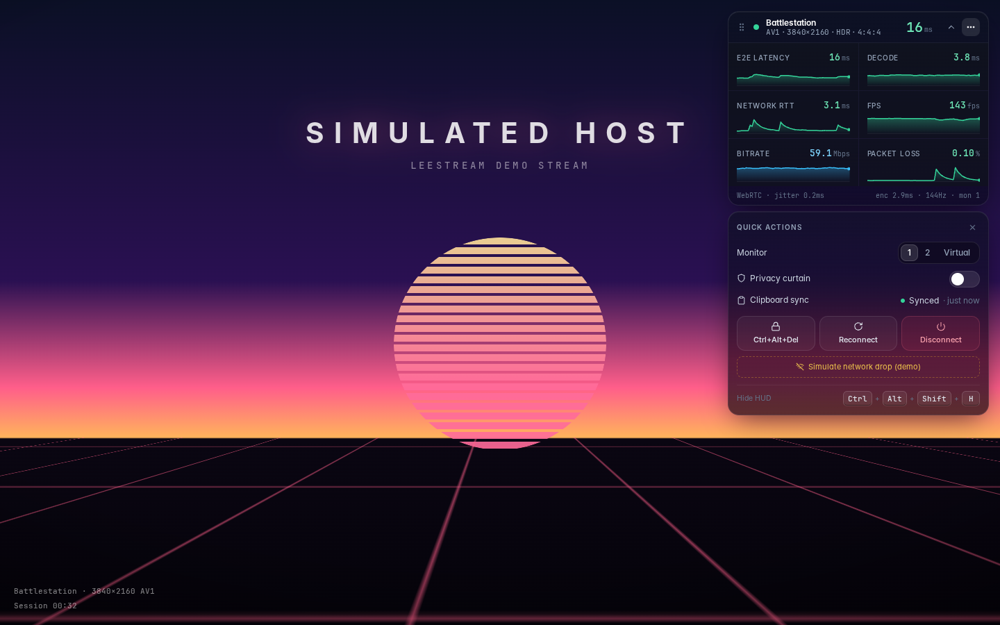

LeeStream v1.0 保姆级图文上手教程 3 分钟连上远控 / 串流
被控端装好生成 6 位码，主控端输入即连。全程硬件编码（NVENC / AMF / QSV），AV1 / HEVC 低延迟串流，最高 240 FPS，Opus 低延迟音频，实时延迟 HUD 随时看。
被控端 Host
被远程控制、负责采集画面并硬件编码的那台 Windows 电脑，比如家里的游戏主机或公司工作站。
主控端 Client
你手上正在用的设备：Windows 客户端（本教程截图），或 Mac / iPad / 手机上的浏览器。
第一步 · 被控端（Host）
一键安装，并生成 6 位配对码
-
下载并运行安装包
在被控电脑上运行
LeeStream-Host-Setup-1.0.0.exe，一路「下一步」即可。安装器会自动检测显卡编码器，并为「专用网络」添加防火墙放行规则。 -
勾选「以系统服务运行」（推荐）
勾选后可在登录界面、UAC 弹窗下照常远控，并支持远程发送 Ctrl+Alt+Del。玩游戏还需手柄的话，一并勾选「虚拟手柄组件」。
-
打开「配对设备」，拿到 6 位码
右键任务栏托盘里的 LeeStream 图标 → 配对设备，窗口里会显示 6 位数字配对码和本机局域网地址。配对码 2 分钟内有效，过期点「刷新」重新生成即可。
在主控端输入此配对码
剩余 1:52 · 过期后自动刷新
本机地址
192.168.1.88
硬件编码
NVENC · AV1
第二步 · 主控端（Client）
双击启动，输入 6 位码秒配对
-
双击启动 LeeStream 客户端
首页「Your hosts」列出所有已保存的主机。每张卡片都会显示：在线状态圆点、显卡型号、实时网络延迟（RTT）、分辨率与刷新率，以及支持的编码格式。
-
点右上角「Pair new host」
弹窗顶部的「On your network」会自动发现同一局域网内的被控端，点一下即可自动填入地址；已经配对过的主机会显示为 Paired。不在同一网络时，可手动输入 IP 或域名（如
my-pc.local:47989）。 -
输入 6 位配对码 → 点「Pair host」
每输入一位会自动跳到下一格，也可以直接粘贴整串数字。配对成功后主机卡片会出现在首页，以后点 Connect 就能一键连接，不用再输码。

1 2 3 4 5
1 2 3 4第三步 · 画质 / 高刷 / 硬编 / 音频
一次调好，之后每台主机自动套用
左侧栏进入 Stream profile。所有改动自动保存，下次连接生效；正在串流时，主机支持的项会实时重新协商。

1 2 3 4 5 6推荐配置，直接照抄
| 使用场景 | 编码 | 帧率 | 码率 | 传输 | 其他 |
|---|---|---|---|---|---|
| 有线局域网 · 竞技游戏 | AV1 / HEVC | 120 – 240 | 50 – 80 Mbps | Direct UDP LAN | Fullscreen、手柄直通 |
| 4K HDR 3A 大作 / 影音 | AV1 / HEVC | 60 – 120 | 80 – 150 Mbps | Direct UDP LAN | HDR10 开 |
| 远程办公 · 写代码 · 修图 | HEVC / AV1 | 60 | 20 – 40 Mbps | WebRTC Auto | 4:4:4 开，文字更锐利 |
| 外网 / 5G 热点 / 酒店 Wi-Fi | Auto | 60 | 8 – 15 Mbps | WebRTC Auto | 先低后高，逐步加码率 |
全显卡硬件编码支持（被控端）
NVIDIA · NVENC
- H.264 / HEVCGTX 10 系及以上
- AV1RTX 40 系及以上
AMD · AMF
- H.264 / HEVCRX 5000 系及以上
- AV1RX 7000 系及以上
Intel · QSV
- H.264 / HEVC7 代酷睿核显及以上
- AV1Arc 独显 / Core Ultra
表中为各厂商硬件编码能力的大致门槛，实际支持情况以被控端安装时的编码器检测结果为准。编码选 Auto 时，按 AV1 → HEVC → H.264 顺序自动挑选主机支持的最佳格式。
♪Opus 音频调优
- 打开 Opus audio：48 kHz 立体声 / 5.1，低延迟模式，声画同步。
- 被控端声音来自 Windows「默认播放设备」，没声音先检查这里。
- 用 5.1 耳机或音箱时，被控端的扬声器配置也要设为 5.1。
◎画质三原则
- 帧率上限不要超过两端显示器的刷新率，超了也看不到。
- HDR10、4:4:4 建议配 AV1 / HEVC；用 H.264 时设置页会给出提示。
- 画面糊先加码率；卡顿掉帧先降码率或帧率。
第四步 · 快捷键 / HUD / 多屏 / 隐私
实时延迟 HUD 悬浮球，一眼看穿卡顿原因

1 2 3 4 5 6四个全局快捷键
快捷键先由客户端拦截，不会发给被控端。想换组合键，在 Stream profile → Hotkeys 里点一下按键，再按新的组合即可（至少要带 Ctrl / Alt / Win 中的一个）。
HUD 读数怎么看
| 指标 | 流畅 | 注意 | 偏高时怎么办 |
|---|---|---|---|
| E2E 端到端 | ≤ 25 ms | ≤ 45 ms | 先看下面哪项拖后腿 |
| Decode 解码 | ≤ 5 ms | ≤ 10 ms | 换 HEVC / H.264，或降分辨率 |
| Network RTT | ≤ 15 ms | ≤ 40 ms | 改用有线 / 5 GHz Wi-Fi |
| Packet loss 丢包 | ≤ 0.5% | ≤ 2% | 降码率，排查无线干扰 |
| FPS 帧率 | ≥ 95% 目标 | ≥ 80% 目标 | 降帧率上限或码率 |
超过「注意」档会变红。HUD 每秒刷新 2 次，曲线显示最近 30 秒的走势。
多屏切换
点 HUD 右上角 ··· 打开 Quick actions，在 Monitor 里选 1 / 2 / Virtual。被控端没接显示器时选 Virtual（虚拟屏），不会黑屏。
隐私黑屏
打开 Privacy curtain 或按 P 组合键，被控端本地显示器会熄屏，你这边照常操作，办公室里没人能看到。
断线自动重连
网络闪断时，顶部会出现重连横幅并自动重试，恢复后提示 Reconnected。也可以手动点 Reconnect。
HUD 可以按住左侧点阵随意拖动，位置会被记住；点 ⌃ 可收起成只显示关键数字的精简模式。剪贴板同步状态和 Ctrl+Alt+Del 也都在 Quick actions 里。
第五步 · Web Client 免安装直连
Mac / iPad / 手机，打开浏览器就能连
在被控端开启 Web Client
托盘菜单 → 设置 → 打开 Web Client 开关，页面会显示访问地址，例如
https://192.168.1.88:47989。设备上用浏览器打开该地址
推荐 Safari（macOS / iPadOS / iOS）或最新版 Chrome、Edge。首次访问如提示证书不受信任，确认是自己的主机后选择继续访问。
输入 6 位配对码
与第二步完全相同。配对成功后浏览器会记住这台设备，下次打开地址即可直连。
添加到主屏幕（可选）
iPad / iPhone 在 Safari 点「分享 → 添加到主屏幕」，之后像 App 一样全屏打开，没有地址栏遮挡。
示意图 · 以实际 Web Client 界面为准
常见排障
局域网自动发现里找不到被控端？
1）两台设备要在同一网段（例如都是 192.168.1.x），访客网络和开了「AP 隔离」的 Wi-Fi 互相看不到；2）被控端的 Windows 网络类型要设为「专用网络」，并确认防火墙放行了 LeeStream Host；3）实在找不到，直接在配对弹窗手动输入被控端 IP。
提示 Invalid code / 配对失败？
配对码 2 分钟有效，过期后到被控端「配对设备」里刷新；确认输入的是这台被控端的码，地址也要对应同一台主机。
连上后黑屏 / 没画面？
① 被控端没接显示器或显示器关着：在 Quick actions 里切到 Virtual 虚拟屏；② 可能开着隐私黑屏：按 Ctrl+Alt+Shift+P 关掉；③ 停在登录界面或 UAC 弹窗时黑屏：重装 Host 并勾选「以系统服务运行」。
延迟高、画面卡顿怎么排查？
按 Ctrl+Alt+Shift+H 打开 HUD，看哪一项变黄或变红：RTT 高是网络问题，换网线或 5 GHz Wi-Fi；Decode 高是主控端解码吃力，换 HEVC / H.264 或降分辨率；丢包高就降码率；FPS 不足先降帧率上限。
没有声音？
确认 Stream profile 里的 Opus audio 已打开；被控端 Windows 的「默认播放设备」要是实际在出声的设备；浏览器端第一次需要点一下画面，才允许播放声音。
文字发糊、看代码费眼？
打开 Chroma 4:4:4，同时把码率提到 30 Mbps 以上，编码选 HEVC 或 AV1。
开了 HDR 画面发灰？
HDR 需要两端同时支持：被控端在 Windows「显示设置」里打开「使用 HDR」，主控端显示器也要开 HDR，编码选 AV1 或 HEVC。
手柄没反应？
确认 Stream profile 里的 Gamepad passthrough 已打开，并且被控端安装时勾选了「虚拟手柄组件」。连接后再插拔一次手柄，或者重连一次会话。
在外面连不上家里的电脑？
传输方式保持 WebRTC Auto（Direct UDP LAN 只适用于局域网），会自动穿透 NAT，不行时走中继；先把码率降到 10 Mbps 左右试连，稳定后再往上加。
🎉
搞定！开始你的低延迟串流吧
记住两个组合键就够了：Ctrl+Alt+Shift+H 看延迟，Ctrl+Alt+Shift+Q 断开连接。
回到顶部 ↑